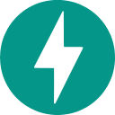

DewTask
An offline-first workspace and task management application designed to help you organize projects, manage tasks, and stay productive.
At Deloitte, I worked on multiple industry-leading projects spanning FastAPI backends, data engineering, and agentic AI. Independently, I build local-first desktop apps that keep data on the device and work fully offline.
I work across the boundary between systems and interface: designing clean relational schemas, profiling and fixing slow queries, and shipping software that feels calm, predictable, and snappy in daily use.
Tripura, India IST (UTC+5:30)

An offline-first workspace and task management application designed to help you organize projects, manage tasks, and stay productive.
A local-first home & asset command center. Track belongings, warranties, maintenance, insurance and documents, all stored privately on your device. Built with Tauri 2, Rust, React & SQLite.
“I put care into the details so the tool feels easy in your hands.”
Core workflows run locally without waiting on a network round-trip.
Indexed local reads, lean state and native windowing keep the UI responsive.
Fewer moving parts to audit, smaller installers, easier long-term upkeep.
Ship only what serves the core workflow. Leave out bundled extras that add clutter.